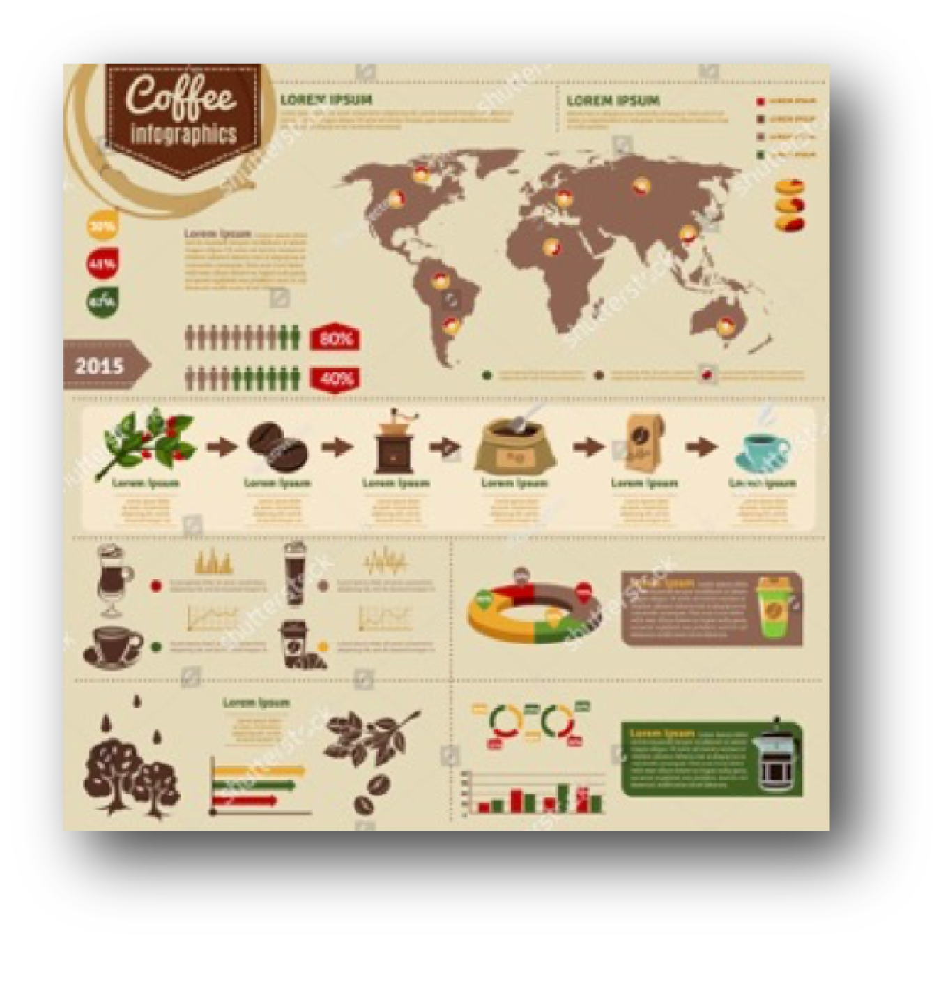

世界上的咖啡樹種約莫4~500種，但主要被廣泛栽種的以阿拉比卡(Arabica)、羅布斯塔(Robusta) 及賴比瑞亞（Coffee Liberica）三個原種為主。其中具有商業價值，仿間耳熟能詳咖啡幾乎都是阿拉比卡(Arabica)種。包括瑰夏、藍山及摩卡等。夏威夷較常見的咖啡品種為：Catuai、Mokka、Typica及Caturra。ISLANDER引進的夏威夷Typica在夏威夷州杯測會中常被形容兼具巧克力與香料風味，略帶焦糖、木質及堅果味。而Caturra則以帶果香、莓果味及絲滑口感見長。ISLANDER特別引進的Yellow Caturra更以蜜瓜般的甜與香著稱。另外這次我們意外發現，夏威夷大島上的Maragogype，一般俗稱的大象豆則顛覆我們對中南美或南亞大象豆的印象，拜火山土壤所賜，不只碩大，巧克力香氣與焦糖甜味與其豆徑呈現令人驚喜的正比例。
島型豆子極為稀有，其中牙買加藍山、夏威夷可那卡霧 ， 兼具火山土壤及高海拔地形與氣候，在這樣的環境下，生長的一般海島型豆子，充滿熱帶果香但質地不夠硬，也因為如此，一般海島型豆子較少進行淺焙，主要原因為，淺焙利用高溫快炒時間短，快速高溫烘焙容易碎。得天獨厚的ISLANDER，於夏威夷大島取得來自屢次得獎之莊園的夏威夷咖啡豆，並與夏威夷優秀的咖啡烘焙職人共同合作，依據台灣消費者的需要，領先業界，烘焙出淺焙夏威夷咖啡豆，其獨特性一定會讓所有精品咖啡的愛好者眼睛為之一亮。
